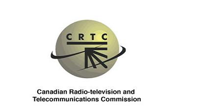

INDICADORES CLAVE DEL SECTOR DE TELECOMUNICACIONES PORCENTAJE DE LINEAS RESIDENCIALES QUE USAN FIBRA OPTICA


LINEAS LOCALES VoIP TELÉFONOS DE PAGA (POR CADA 1,000 HABITANTES)


Fuente: Canadian Radio-television and Telecommunications Commission (2014)
ENTIDADES REGULADORAS
Canadian Radio-television and Telecommunications Commission
Innovation, Science and Economic Development Canada

Trabaja en todas las áreas de la economía y en todas partes del país para mejorar las condiciones de inversión, el desempeño en la innovación y aumentar la participación en el comercio mundial.
Ir al Sitio Web

Es la entidad reguladora de televisión y de telecomunicaciones en Canadá. Fue creada cuando se hizo a cargo de la responsabilidad de regular las compañías de telecomunicaciones.
Ir al Sitio Web